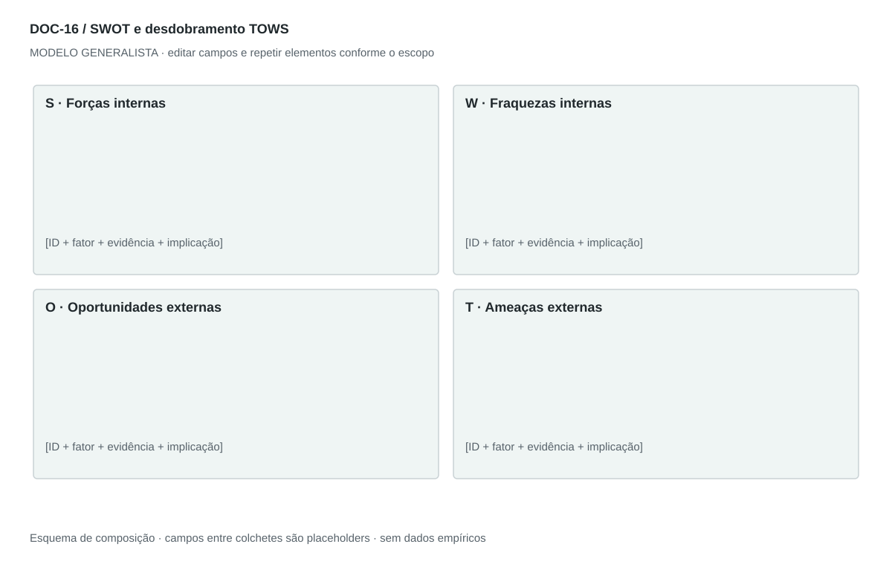

DOC-16 / Biblioteca documental generalista
SWOT e desdobramento TOWS
Sintetizar fatores internos e externos e convertê-los em escolhas estratégicas rastreáveis.
Modelo de investigação. Não representa uma análise concluída. Campos vazios devem permanecer identificados; não inventar dados para completar figuras.
Estrutura editorial
Uma página SWOT 2×2 com itens curtos e IDs; uma página de cruzamentos TOWS. Acrescentar explicações em anexo sem dividir quadrantes entre páginas.
Visual previsto

Forças e fraquezas na linha superior; oportunidades e ameaças na inferior. Texto alinhado à esquerda. Cores identificam quadrantes e não provam intensidade.
Imagens: Matriz textual; nenhum retrato, fotografia de mercado ou imagem de produto é necessário.
Dicionário de dados
| Campo | Tipo | Dado necessário |
|---|
| item_id | referencia | Identificador S, W, O ou T |
| quadrante | enum | forca, fraqueza, oportunidade ou ameaca |
| fator | texto | Afirmação específica e verificável |
| justificativa | texto | Por que afeta o objetivo |
| cruzamento | enum | SO, ST, WO ou WT |
| itens_origem | lista | IDs dos fatores combinados |
| acao | texto | Escolha decorrente do cruzamento |
| criterio_prioridade | texto | Impacto, esforço e evidência usados na escolha |
Todos os registros precisam de classificação, fonte, localização, datas, confiança e limitação. Números também precisam de unidade, moeda quando aplicável e período.
Modelo preenchível
Os quadros amarelos podem ser editados nesta página para impressão. Edições não são gravadas automaticamente: use o Markdown/JSON para manter uma versão ou imprima em PDF após editar.
[Negócio] · [Versão] · [Data-base] · [Autor] · [Audiência] · [Território]
Pergunta decisória: [A preencher]
Escopo: [A preencher]
1. Recorte
Unidade de negócio, território e momento.
[Análise + evidência + implicação + lacuna]
2. Forças
Capacidades internas demonstradas que favorecem o objetivo.
[Análise + evidência + implicação + lacuna]
3. Fraquezas
Limitações internas relevantes, incluindo lacunas de evidência.
[Análise + evidência + implicação + lacuna]
4. Oportunidades
Mudanças externas favoráveis que o negócio pode explorar.
[Análise + evidência + implicação + lacuna]
5. Ameaças
Pressões externas que podem comprometer o objetivo.
[Análise + evidência + implicação + lacuna]
6. TOWS
Cruze SO, ST, WO e WT; indique quais itens sustentam cada ação.
[Análise + evidência + implicação + lacuna]
7. Prioridades
Escolha ações, responsáveis, evidência necessária e condições de revisão.
[Análise + evidência + implicação + lacuna]
Decisão e próximo passo
[Decisão e justificativa]
[Alternativa considerada]
[Condição de reversão]
[Ação, responsável, prazo e critério]
Fontes e limites
[Fonte + localização + datas + o que sustenta + limitações]
Critérios de revisão
- Interno e externo estão separados.
- Uma promessa futura não vira força comprovada.
- TOWS é extensão recomendada, não parte observada no documento-fonte.
Estudo do arquivo original
DOC-16-fonte.pdf — Duas páginas em paisagem. Matriz 2×2 com bullets centralizados e termos em negrito; títulos recebem pequenos destaques verde, vermelho, azul e amarelo. A segunda página continua os quadrantes inferiores. Não há cruzamento TOWS explícito no original.
Observação do original e adaptação recomendada são camadas distintas. Nomes, preços, localidades, contatos e conclusões do caso-fonte não devem preencher a nova análise.